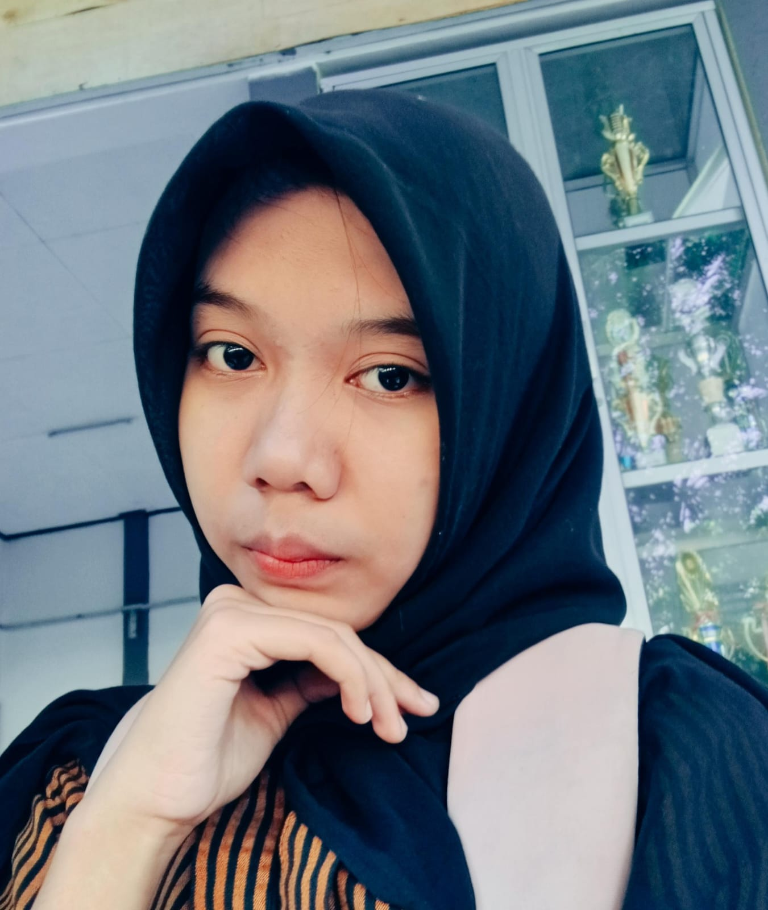

Aku Azzahra Cindy adalah pribadi yang aktif, kreatif, dan bertanggung jawab, dengan minat di bidang memasak, desain sederhana, serta kerja sama tim. Saya senang belajar hal baru, beradaptasi dengan lingkungan, dan berusaha memberikan hasil terbaik dalam setiap kegiatan.